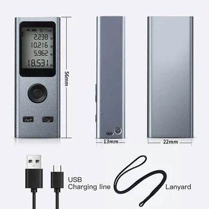

In an era where efficiency and accuracy are key, the Mini Laser Rangefinder 30M Precision emerges as a revolutionary tool for a diverse range of users, from dedicated outdoor enthusiasts to professionals requiring exact measurements. This intelligent device is meticulously engineered to provide highly accurate distance readings in an exceptionally compact and user-friendly format. It effectively redefines what it means to carry precision in your pocket, eliminating the need for bulky, traditional measuring tapes or less accurate estimation methods. Whether you are meticulously mapping out a new hiking trail, strategically setting up a remote campsite, conducting essential measurements for home improvement projects, or performing critical assessments in a professional capacity, this rangefinder is built to deliver consistently reliable results with remarkable ease. Its thoughtful design prioritizes both high-performance capabilities and practical, everyday usability, seamlessly integrating advanced laser technology into a form factor that’s genuinely portable and ready to accompany you on any adventure or critical task. This blend of robustness and innovation makes it an invaluable addition to any personal or professional toolkit, ensuring that distances are no longer left to chance or approximation, but are determined with scientific precision.
Unmatched Precision for Every Endeavor
The cornerstone of the Mini Laser Rangefinder's appeal is its extraordinary precision, setting it apart in the realm of portable measuring instruments. This advanced device is engineered to accurately measure distances spanning from a minuscule 0.03 meters to a considerable 30 meters, effectively covering a wide spectrum of measurement needs. Its remarkable accuracy of ±0.001 meters means that users can rely on highly precise data, a critical factor for tasks where even minor discrepancies can have significant consequences. Such minute accuracy is invaluable in fields like construction, interior design, surveying, or even detailed crafting, where meticulous measurements are the foundation of successful outcomes.
Understanding the diverse needs of its global user base, the rangefinder offers unparalleled flexibility in measurement units. Users can effortlessly switch between meters, inches, and feet, catering to various regional standards, project specifications, or personal preferences. This adaptability ensures that no matter your location or the specific demands of your task, you can obtain and interpret readings in the most convenient and familiar format. At its heart, the device utilizes a Class2 laser, operating within the 630~670nm wavelength with a power output of less than 1mW. This specific laser type is chosen for its ability to provide consistent, clear, and reliable readings while adhering to international safety standards, making it a trustworthy and effective instrument for a comprehensive array of applications. The combination of its wide measuring range, exceptional accuracy, and flexible unit options positions this mini laser rangefinder as a truly versatile and indispensable tool for achieving accurate distance assessments every single time.
Designed for Ultimate Portability and Convenience
Living up emphatically to its "Mini" designation, this laser rangefinder is a testament to cutting-edge compact engineering. Its dimensions are incredibly modest, measuring just 56x21.5x13.5mm, and it boasts an astonishingly light weight of a mere 25 grams. This makes it genuinely a smart and exceptionally portable device. This ultra-lightweight and impressively slim profile means the rangefinder can be effortlessly slipped into the smallest pocket, secured onto a keychain for immediate access, or discreetly stored within any compact compartment of a backpack or travel bag without adding any discernible bulk or inconvenience. The thoughtful design ensures that precision measurement is always within arm's reach, ready for spontaneous use or planned tasks.
Beyond its miniature size, the device is constructed with durability in mind. Its outer shell is meticulously crafted from a high-quality aluminum alloy. This robust material choice is not merely aesthetic; it provides significant resilience against the inevitable bumps, scrapes, and minor impacts that come with daily use and the demands of outdoor expeditions. The aluminum alloy ensures the device is not only lightweight but also remarkably capable of withstanding various environmental conditions, from urban settings to more rugged natural landscapes. This combination of extreme portability and sturdy construction makes it an unequivocally ideal tool for extensive travel, ambitious outdoor adventures, and a myriad of diverse daily applications where both precision and robustness are highly valued.
Effortless Power with USB Rechargeability
Embracing modern convenience and sustainability, the Mini Laser Rangefinder liberates users from the perpetual hassle and expense of constantly replacing disposable batteries. It comes thoughtfully equipped with a powerful and highly efficient 200mAh lithium battery, which is designed for easy and universal USB recharging. This contemporary feature means that powering up your device is as simple as plugging it into any standard USB port. This includes commonly available power sources such as your laptop, a portable power bank during outdoor excursions, or any standard USB wall adapter found at home or in the office.
The profound advantage of USB rechargeability extends beyond mere convenience; it ensures uninterrupted productivity and unwavering readiness. Whether you find yourself deep in the wilderness, far from conventional power outlets, or meticulously working on a demanding job site with limited access to specific battery types, the ability to recharge on the go means your device is consistently powered and prepared for immediate action. This thoughtful design element not only significantly enhances user convenience but also aligns with eco-friendly principles by reducing electronic waste from single-use batteries, making the Mini Laser Rangefinder a smart, sustainable, and always-ready solution for all your measurement needs.
Built for Reliability and Safety
In the domain of advanced electronic devices, the assurance of safety and an unwavering commitment to quality stand as paramount concerns for discerning users. The Mini Laser Rangefinder is engineered to instill complete peace of mind, primarily through its distinguished CE certification. This highly respected certification is not merely a label; it serves as a robust declaration that the device meticulously adheres to the most stringent safety, health, and environmental protection standards mandated within the expansive European Economic Area. This rigorous endorsement means that users can confidently operate this sophisticated measuring tool, secure in the knowledge that it has undergone thorough testing and meets rigorous quality control benchmarks.
Beyond its certified compliance, the device’s robust engineering extends to its operational capabilities across varying environmental conditions. It is specifically designed to perform with consistent reliability within a practical working temperature range of 0-40℃. This range ensures optimal functionality in typical indoor and outdoor environments, from moderately cool mornings to comfortably warm afternoons. Furthermore, for periods of non-use or storage, the rangefinder is built to safely endure temperatures spanning from -10°C to 60°C. This expansive operational and storage temperature resilience is a critical feature, guaranteeing its long-term functionality and durability across a diverse spectrum of climates and demanding conditions, providing consistent performance whether you are in a temperate office or exploring more challenging outdoor settings.
Ideal Applications for Your Mini Laser Rangefinder
The remarkable versatility inherent in the Mini Laser Rangefinder transforms it into an indispensable tool suitable for an extraordinarily broad spectrum of activities and professional applications. Its unique combination of high precision and an incredibly compact design unlocks a multitude of practical possibilities across various scenarios:
- Outdoor Exploration and Adventure: For avid hikers, dedicated campers, and adventurous explorers, this device is invaluable. It facilitates accurate gauging of distances to landmarks, precise planning of trekking routes, and the strategic, meticulous layout of campsites. It can help assess distances for safe navigation and understanding terrain.
- Seamless Travel Companion: An exceptional and unobtrusive companion for frequent travelers or those on short trips, needing quick and precise measurements of spaces, luggage dimensions, or object sizes without the burden of carrying cumbersome, heavy equipment.
- Efficient Home Improvement Projects: A highly useful tool for DIY enthusiasts and homeowners undertaking various renovation tasks. It enables swift and accurate measurements for planning kitchen or bathroom layouts, precisely positioning furniture, or ensuring perfect alignment when hanging artwork and decor.
- Engaging Educational Purposes: Serves as a fantastic practical instrument for students and educators alike in disciplines such as physics, engineering, or surveying. It allows for conducting hands-on experiments, practical demonstrations of distance measurement principles, and fostering a deeper understanding of spatial relationships.
- Professional Assessments and Tasks: An essential aid for professionals including architects, interior designers, real estate agents, land surveyors, and construction workers. It provides rapid, preliminary measurements and estimations crucial for site assessments, client consultations, and early-stage project planning.
- Streamlined Inventory Management: Proves highly efficient for personnel involved in small-scale inventory checks or warehouse management, enabling quick and accurate measurements of storage spaces, shelf dimensions, or individual item sizes for optimized organization.
The Mini Laser Rangefinder's unparalleled ability to deliver high accuracy in a miniature, handheld form factor makes it an incredibly adaptable and potent instrument. It is perfectly suited to almost any scenario where distance needs to be determined not just quickly, but with absolute precision and unwavering confidence.
In summation, the Mini Laser Rangefinder 30M Precision stands far beyond a mere measuring device; it embodies a steadfast commitment to unparalleled efficiency, pinpoint accuracy, and supreme user convenience. Its intelligently crafted design, seamlessly integrated with a suite of robust and practical features such as effortless USB rechargeability, a resilient aluminum alloy shell, and the authoritative backing of CE certification, solidifies its status as an utterly indispensable tool for anyone who demands consistently reliable and precise distance measurements. This smart device is meticulously engineered to empower you, allowing you to confidently tackle a myriad of tasks, whether they involve navigating the great outdoors, streamlining professional projects, or enhancing everyday domestic assignments. Embrace the transformative power of compact precision and significantly elevate your measurement capabilities, ensuring accuracy and confidence wherever your journey or tasks may lead you.